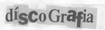

Matérias
Entrevistas e reportagens
- Viagem ao Planeta Lamma (Entrevista)
- Damião Experiença está vivo (Reportagem)
- Damião Experiença por Senhor F.
- Skylab cita Damião como modelo de música:http://nomindinho.blogspot.com/
- Skylab cita Damião no Jornal do Brasil: http://jbonline.terra.com.br/jb/papel/cadernob/2001/08/02/jorcab20010802009.html
- Torquato Netto, o poeta, era amigo de Damião: http://www.noolhar.com/opovo/vidaearte/198136.html
- Damião e o Portão citados no blog Morfina: http://www.morfina.blogger.com.br/
- Damião e o Portão em reportagem de página inteira na revista Geek (nº 37, outubro/2003): http://www.geek.com.br/
Aviso:
Topo
Acessos ao site desde
25 de agosto de 2002: